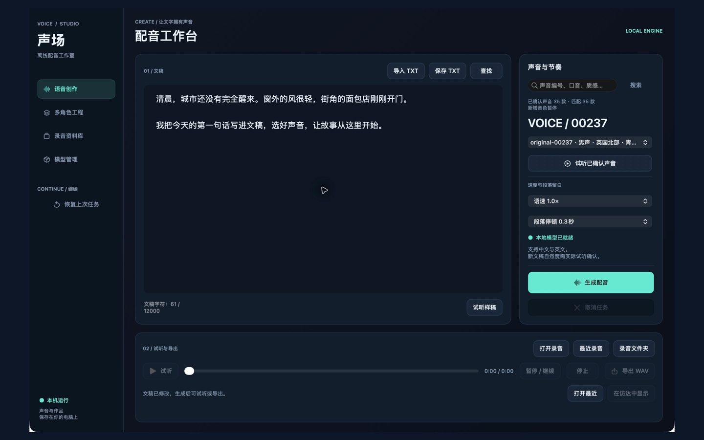
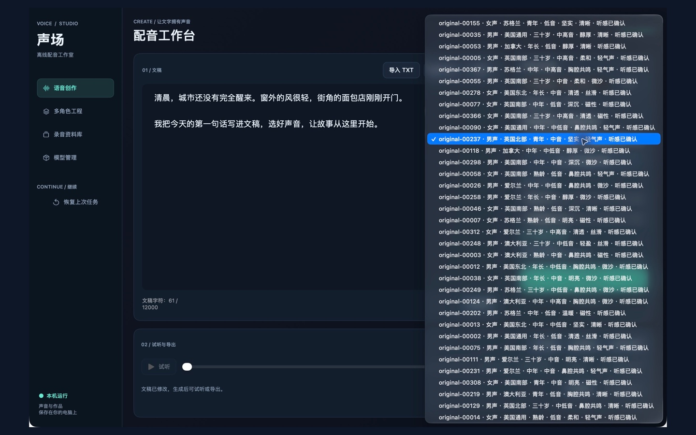
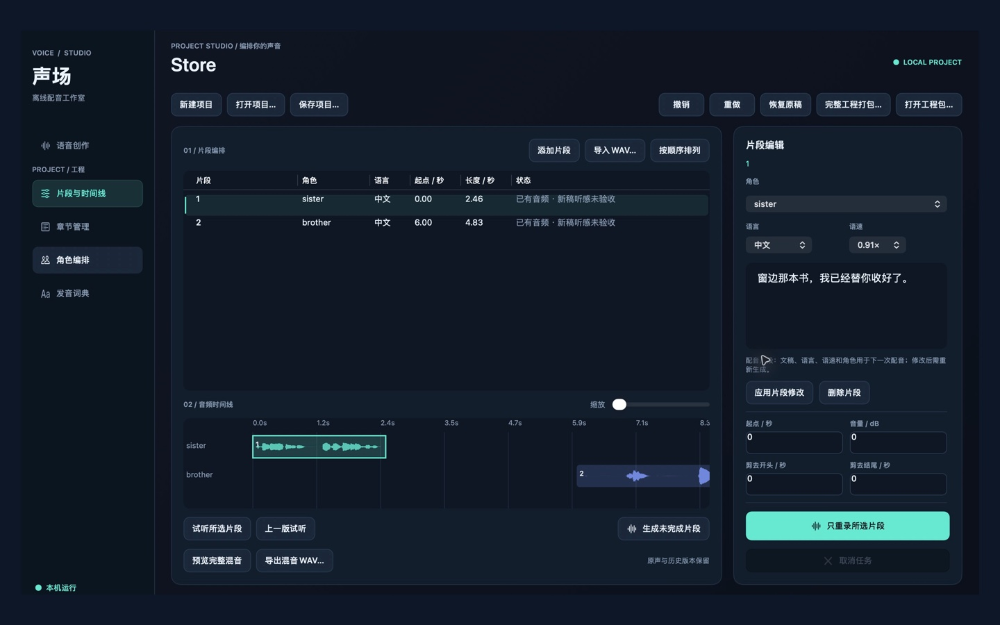

文稿与声音
导入TXT或直接编辑，搜索35款已有声音，选择语速与段落停顿，再生成配音。普通文稿输入上限为12000字符。
离线配音工作室把文稿、声音、片段和工程放在同一个本地工作台。生成后可以试听、整理、重录和导出，不需要把录音交给云端配音服务。
导入TXT或直接编辑，搜索35款已有声音，选择语速与段落停顿，再生成配音。普通文稿输入上限为12000字符。
在多角色工程中选择片段，按句拆分、修改和重录。必要时使用相邻句连续重录，其余素材保留。
WAV用于成品导出；完整工程包用于备份和搬移。换机前保留一份独立工程包，并核对恢复结果。

实际2.5安装版截图，使用演示文稿。界面和波形不代表对所有文稿的听感保证。


00005与00367的指定中文双人文稿，以及指定局部重录已获得用户听感确认。这些确认只属于对应录音，不能推广到所有文稿、声音或情绪。每次新生成后仍应试听，检查发音、角色表现、音量与衔接。
角色画像与场景说明不能保证每次都产生理想表演；连续重录有范围和一致性检查，旧音频缺少可靠定位时不会猜测切点。
公开源码仓库保留2.3独立源码发布，不等于2.5商店安装包。本次仅增加支持文档，不公开个人录音、工程、声音参考或模型权重。